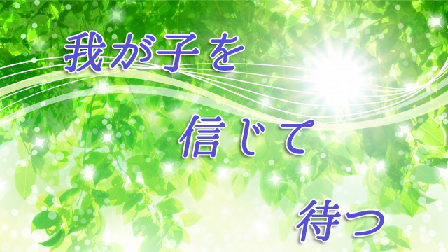

実は「子どもの教育」において親は特別なことをする必要はないというのが私の考えだ。
前回話したように、子どもが小さいころは本来もっている知的好奇心をつぶさないようにし、思春期以降は信じて手放す。これだけで良い。それ以上の習い事や塾などは通わせたいなら通わすし、行きたがらないのなら無理に行かせる必要はない。
まして「親の責任を果していないのではないか」とか「このままの成績では将来が心配」などと悩む必要はないのだ。
幼稚園ぐらいまでは親も「子どもが元気で育ってくれれば…」とおおらかに構えているのに、学童期に入ると途端に「成績」が気になり始める。それは学校というものが子どもたちの学力を評価し「成績」という形で通知するからだが、これは学校というシステムの性質上仕方がない。学校の成績というものは長い子どもの人生のある時期、その瞬間における理解度を教師の主観やペーパーテストで判定したものであり、不変のものでも絶対のものでもない。本来の能力―将来開花するかもしれない潜在能力―を評価しているわけではない。
こう正しく理解していれば子どもの「成績」に一喜一憂する理由はどこにもないはずだが、通知表に「３」だの「２」という数字がつけば「ウチの子は算数が苦手」だの「国語がダメ」などと親自らが評価を下してしまう。
学校の「評価」を親がうのみすることによって、「ウチの子は○○が苦手」と我が子にレッテルを貼ってしまう。当然子どもは「○○が苦手な自分」というアイデンティティをつくり上げる。結果○○が苦手→もっと○○を勉強すべき→ますます○○が嫌になる→以下ループとなりかねない。
子どもの教育にとって一番有害なのは、親が子どもに「勉強させよう」と思っていることにある。勉強に限らず仕事でもスポーツでも何でもそうだが、外側から圧力をかけられて力を発揮することはない。少なくとも永続的に力を維持することはできない。自ら「その気」になったときが本当のスタートとなる。こんなことは誰でも知っていることだが、いざ我が子のことになると何とか勉強させようとあの手この手と考え出してかえって迷路にはまってしまう。
だから親の態度としては冒頭に言ったように特別なことは何もしないのが良い。「勉強しなさい」というオーラも出さないこと（笑）。そうすれば子どもは時期（受験など）が来たら勝手に自分で勉強するようになる。
要は子どもが自らの意思で取り組むのを親は信じて待つしかないということ。
まずは子どもの心配をやめる
多くの親がぶつかる難問は、この「待つしかない」「信じるしかない」のに待てない信じ切れない心の葛藤にあるといえる。
「何も言わないとますます勉強しなくなるのでは…」と心配する親は、その心配こそが子どもを勉強から遠ざけている要因だと理解して欲しい。心配すればするほど心配しなければならない問題が増えてくるとしたら、それでも親であるあなたは心配したいだろうか？
このブログで何度も言ってきたように、心配は相手を信じていないというメッセージを意味する。「言わないと勉強しないのでは」という心配は「ウチの子は言われないと何もできない」という不信の表明でありレッテル貼りだ。当然子どもにそのメッセージは伝わってしまう。こういう親の本音メッセージは子どもの将来まで拘束するから注意したい。
下手したら「言われないと自ら動けない人間」「言われたから嫌々やる人間」「言われないようにやってるフリをする人間」ができ上がってしまいかねない。まさか我が子をそんな人間にしたい親はいないだろう。
子どもを信じるとか待つということに抵抗を感じる人は、まずこの「心配」を止めることをお勧めしたい。心配が消えれば不思議なことに「安心」が残る。それまで子どもの心配な面（ネガティブ）にばかりフォーカスしていた視点がニュートラル（中立）になったため、良い面も視界に入ってくるからだ。
「何だ、ウチの子も案外ガンバってるじゃないか」とか「好きなモノは一生懸命やれるのね」というふうに。
勉強するかしないかは子どもの「課題」
もうひとつ、子どもに「勉強させようとするな」と私が言う理由は勉強する、しないはその結果も含めて子どもの課題であって親が介入すべきではないからだ。「課題」とは心理学者のアドラーのセリフだが、彼によれば人には立場に応じて各々課題があるという。
たとえば、子どもの健康管理に気を配るとか学校のPTAで活動するとかは親の課題（問題）だが、勉強するかしないかやどんな部活に入るとかは子どもの課題（問題）すなわち子どもが決めるべきこととなる。
そしてアドラーによれば、たとえ親子であっても互いの課題に介入することはできない。それは人間関係を破たんに導くだろうと言う。
分かりやすい例をあげると、将来子どもが誰と結婚するかは子どもの課題（子どもが決めるべき領域・テーマ）であって、親が反対したり色々口出しすると（課題に介入すると）やっかいな問題を引き起こすだろうということだ。
要は「勉強するかしないか」は子どもの問題（人生の課題）であって親は介入できない。だからそう割り切って親は「子どもを何とか教育せねば」という、義務感あるいは心の葛藤をぬぐい去り大らかな気持ちで子どもの成長を見守れば良い。そうして自分のやるべきこと、自分の人生の課題に取り組む。
そうすれば自ずと子どもも自分の課題に取り組むことになるだろう。
実は、私も我が子にそうしている。特に息子たちが中学生くらいからは「勉強」は彼らの課題と見なして「勉強させよう」とは一切考えず、私は私のこと（課題）に集中するよう心がけた。
ただ、互いの課題に介入しないといってもお互いまったく会話しないとか「自分は自分他人は他人」というようなヨソヨソしい態度を取れという話ではない。まったく逆だ。
私の場合だと子どもたちとの会話はむしろ活発になりそれを楽しむ機会が増えたと感じる。
お互いの考えていることや、子どもたちの友人関係学校でのエピソードなど食卓で盛り上がることは多い。勉強の話題もけっこう出るが、それは子どもたちのほうから勝手にわき起こったものに対して私や妻が感想を述べるという程度。特に「ああすべき」「こうすべき」はない。聞かれれば何でも答えるし、人生の教訓めいた話もすることはあるが、あくまでそれは「私の意見」であり子どもたちがどう受け取るか自由というスタンスだ。
お互いの課題に介入しないということは互いの領分を尊重し自由を認めることになる。そして子どものことをアレコレ心配せず親も自分の課題に向き合う姿勢を示すことで、子どもの主体性も向上する。たとえ普段ゴロゴロしていようと、やるときはやるだろうと子どもを信頼していれば実際にそうなる。
信頼という言葉さえ強すぎるかも知れない。私の場合なら安心というのが近い。安心するほど子どもの姿勢も良い方へ向かっていると実感する。
ここで強いて親の心がまえ的な話をすると、子どもとは心を開いてオープンに会話することが重要だ。親だからという仮面をかぶらず―自分を飾らず―欠点も含めて自らをさらけ出す姿勢でいれば良い。子どもは決して親に「聖人君子」や「万能人間」を求めているわけではない。むしろ親の人間的側面や人間臭さにこそ共感を感じるからだ。
その上で、もしできるなら目先の点数に拘った話でなく学ぶことの大切さそのものについて広い視野から語ってあげて欲しい。（但しお説教調ではなくあくまで個人的見解として）
親の、切実な体験に基く個人的見解は必ず子どもの胸に響くものだ。
こうして、オープン、自由、安心の親子関係を結んでいれば子どもたちも自分からものを考え、自らの意思で動き出す。
後はただ信じて待てばよいのだ。